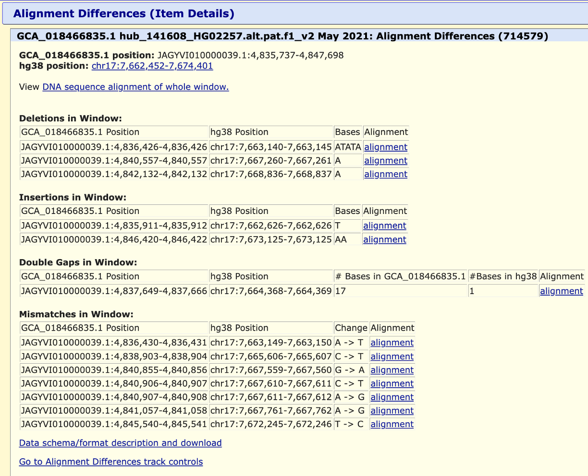

The Alignment Differences track shows mismatches, insertions, deletions, and double-sided insertions between two assemblies. In QuickLift, the source assembly is the assembly where the annotations come from, and the destination (target) assembly is the assembly you are currently viewing. QuickLift maps (liftOver) annotations on demand from the source to the target using whole-genome alignment chains.
This track is part of the QuickLift track group, which appears under a green "QuickLift from ..." group in the target genome assembly. QuickLift tracks have a green left-side button bar in the Browser graphic, instead of the usual gray, and can be removed by the button.
The Alignment Differences track displays liftOver differences using triangles and lines. Alignment differences are marked by lines, with colored triangles indicating the type of difference:
Mousing over a triangle displays the size base-pair (bp) difference and the type of alignment difference. Clicking a triangle opens a details page showing:

An alignment between two DNA sequences maps every nucleotide in one sequence to a nucleotide in another sequence. By making and using whole-genome alignments (Kent et al., 2003), genome annotations can be "lifted" to another assembly (liftOver) in bulk, one track at a time. QuickLift uses the same algorithm to lift annotations on demand, in real-time, for all visible tracks. Only the annotations in the currently visible region are lifted, so this is usually fast enough when browsing a genome.
The Alignment Differences track is generated by comparing the whole-genome alignment chain between the source and target assemblies. Where the alignment differs, the track classifies each difference by type:
QuickLift functionality depends on the availability of alignment files (chains) that describe how sequences in one assembly correspond to another. The alignment files are currently made at UCSC, and if no alignment file is available for the assembly in which you're interested, please send a request to the genome mailing list, and we will attempt to provide you with one.
Kent WJ, Baertsch R, Hinrichs A, Miller W, Haussler D. Evolution's cauldron: duplication, deletion, and rearrangement in the mouse and human genomes. Proc Natl Acad Sci U S A. 2003 Sep 30;100(20):11484-9. PMID: 14500911; PMC: PMC208784